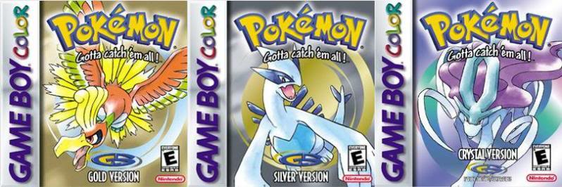

The long-awaited generation 2 of Pokemon was released in Japan on November 21st, 1999, and on October 25th, 2000 in North America. Many players (or trainers) had waited over two years after the initial release of the second generation. In the first episode of the anime, Ash (the main character) spots a golden bird which could not be defined by the Pokedex. This same golden bird is one of the mascots of the video game. Ash Ketchum and his friends arrived in the Johto Region on October 14th 2000 (October 14th 1999 in Japan), and caught a glimpse of the legendary pokemon Entei (one of the legendary trio of Johto).

Pokemon Gold and Pokemon Silver were released on October 15th, 2000 (and November 21st, 1999 in Japan), and featured the legendary pokemon Ho-Oh and Lugia as well as the legendary trio of Entei, Suicune, and Raiku. These two new games introduced exactly 100 new pokemon in the brand new “Johto Region”. It was about a boy (the player chooses name) who leaves his home to help a local pokemon professor complete a pokedex, which is a device that stores information about pokemon you capture. About a year later, on July 29th, 2001, (and December 14th, 2000 in Japan) Pokemon Crystal was released. This game was a revised version of Pokemon Gold and Silver and it included some new subplots, as well as sprite animations, which were absent in Pokemon Gold and Silver.
